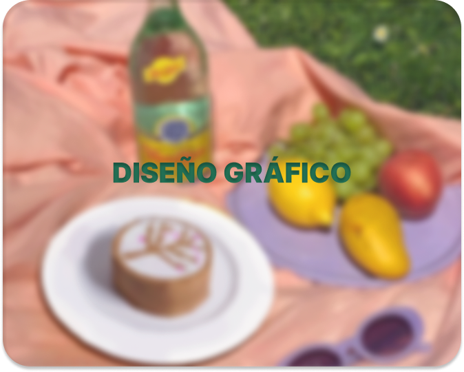

Graphic Design is one of my stongest suits, since the visual arts are the area that I've worked on the longest! ⊹╰(⌣ʟ⌣)╯⊹ I also really enjoy how verstile it can be and its connections to other areas like videogame design (useful for UI/UX) and 3D art (useful for character design and texture creation). But, on its own it's an area that really shines and I'm proud to showcase =^_^=